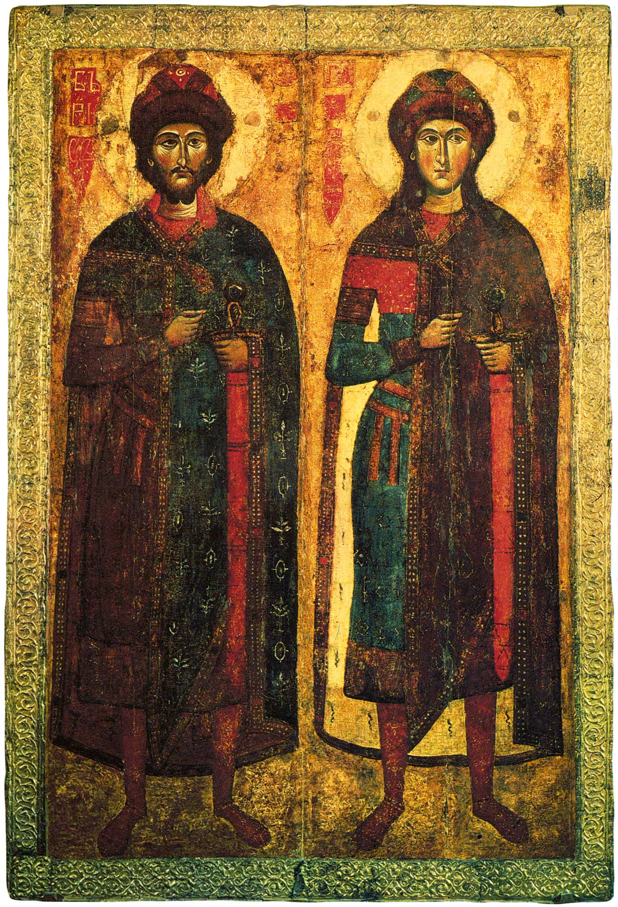

Medieval and early modern Russians had two names: one calendar name from the Christian calenda and one non-calendar, a pagan name. The pagan name is how people knew each other and the calendar name was less known so that a sorcerer could not put an evil spell on the person's Christian name. For example, Tretyak is a pagan name, which means a third child, and the calendar name is Joseph.
Prince Vladimir, who baptized Rus in 988, added to his pagan name Vladimir (means the one who controls the entire world) a Christian name Vasily. Few people know his baptismal name so that the evil sorceress could not put an evil spell on him.
The Christian names of the first Russian local saints Boris and Gleb. Saint Boris and Saint Gleb were early Kyivan Rus' princes who chose non-resistance and were assassinated around 1015 during a power struggle. They are honored as the first saints and primary "passion-bearers" of Russian Orthodox Church. Boris and Gleb are pagan names. The Christian name of Boris is Roman and Gleb is David.

Among the ancient Slavs, protective names (names used as amulets) were given to children to protect them from evil spirits, the evil eye, and diseases. People believed that evil forces would leave a child alone if the child had an unattractive, frightening, or “worthless” name, or a deceptive name intended to mislead them.
Main Types of Protective Names
Names suggesting flaws or unattractive qualities: These were given to deceive dark forces, making them believe that the child was ugly or uninteresting.
Examples: Nekras (ugly or unattractive), Besson (one who does not sleep / one who keeps watch), Upyr (vampire or evil spirit).
False names (deceptive names): These were intended to make evil spirits believe that the child belonged to someone else or was of no value to the parents.
Examples: Nenash (“not ours”), Naiden (“foundling” or “one who was found”).